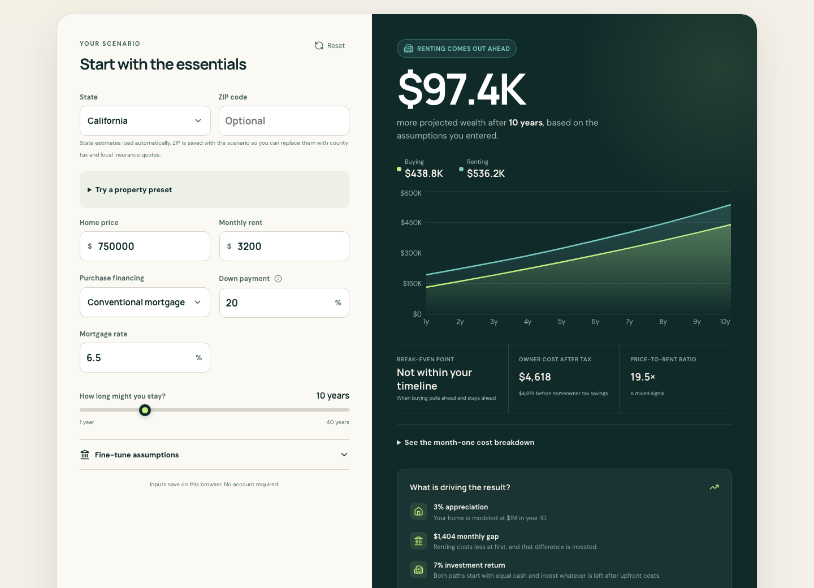

Look beyond the monthly payment.
The useful question is what you could have at the end of your stay, after selling costs, remaining debt, and the savings you invested along the way.

Buy or Rent compares two paths with the same starting capital. Buying builds equity, but also brings transaction costs, maintenance, insurance, and taxes. Renting leaves capital available to invest. Whichever path costs less each month invests the difference.
The answer depends on your assumptions. A useful calculator makes those assumptions visible.
Three things to change first
- The home and the rental. Use properties you would actually consider, with local tax bills and insurance quotes.
- How long you might stay. Buying and selling costs matter more over a short horizon.
- Your expectations. Try different appreciation, rent-growth, and after-tax investment returns. No single forecast is certain.
The result includes a durable break-even point: the first month after which buying stays ahead through your selected horizon. It is not a promise that buying stays ahead forever.
Read the financial model